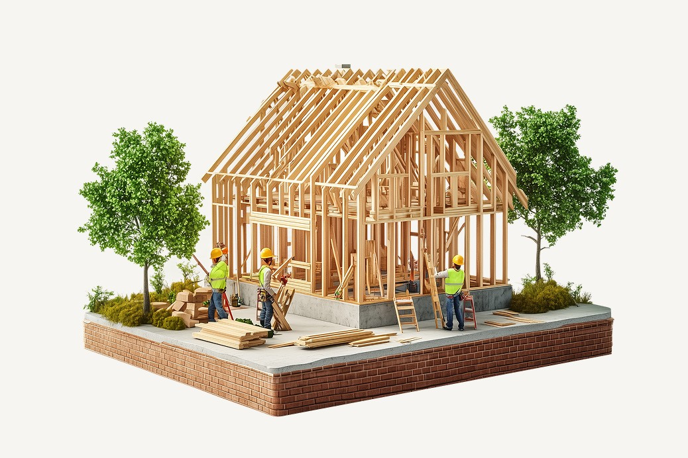

BUILDING UX DISCIPLINE & SYSTEMS
Zero to Scale: Founding Accutech’s Design Discipline
How I helped Accutech build a design team and design system from the ground up that now supports its entire product ecosystem.
Ask Me About
- The one concept that sold our leadership team on pursuing a design system.
- Why we decided to build our design system from scratch vs. using a pre-built library.
- How I hired and structured our design team — and what I look for in people when building a design culture.
- Why rolling out the design system to one product first encouraged organic adoption.
- Why positioning the design system as infrastructure vs. just UI consistency remains vital to its growth.
- How I mentor not just my team but stakeholders across the organization to become more design literate.